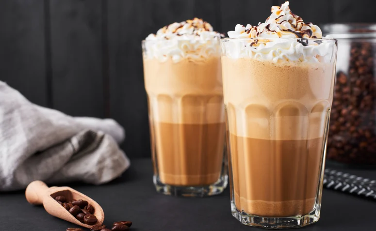
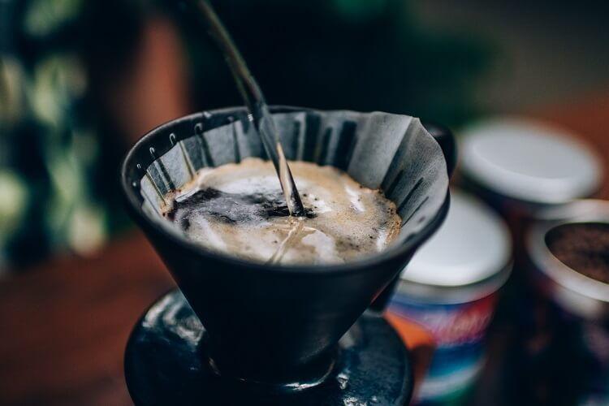
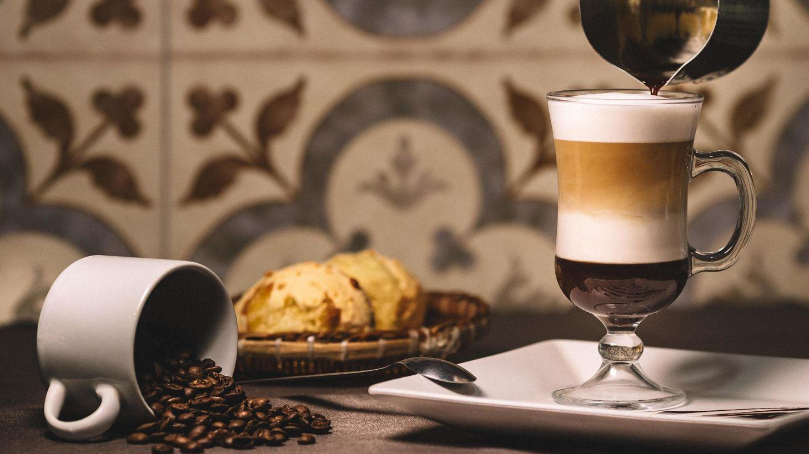
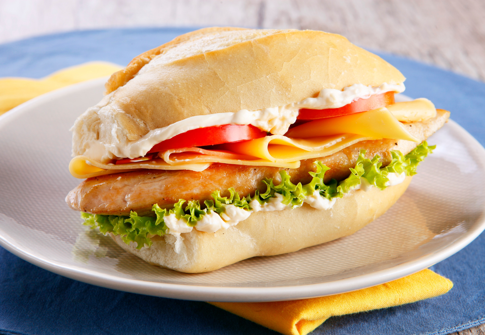

CARDÁPIO DIGITAL

Café expresso
Preparado com o método tradicional: filtro de papel.

Macchiato
Café expresso misturado com um pouco de leite quente
com espuma.

Café americano
O café americano é uma variação do café
espresso que utilizada uma quantidade
maior de água.

Café solúvel gelado com cubos de gelo e
Café frappé
Café solúvel gelado com cubos de gelo e
espumado num shaker ou liquidificador.

É feito derramando água quente nos grãos de
Café Coado
É feito derramando água quente nos grãos de
café moídos e permitindo a fermentação.

Irish coffee é uma bebida a base de café,
Irish coffee
Irish coffee é uma bebida a base de café,
uísque irlandês, açúcar e chantilly.
Dependendo de qual cafeteria você estiver, é possível encontrar até mesmo outros tipos de café!
Os apresentados nessa lista são os padrões de todas cafeterias da Café do Sul,
mas não quer dizer que seja apenas isso.

Waffles

Sanduíche